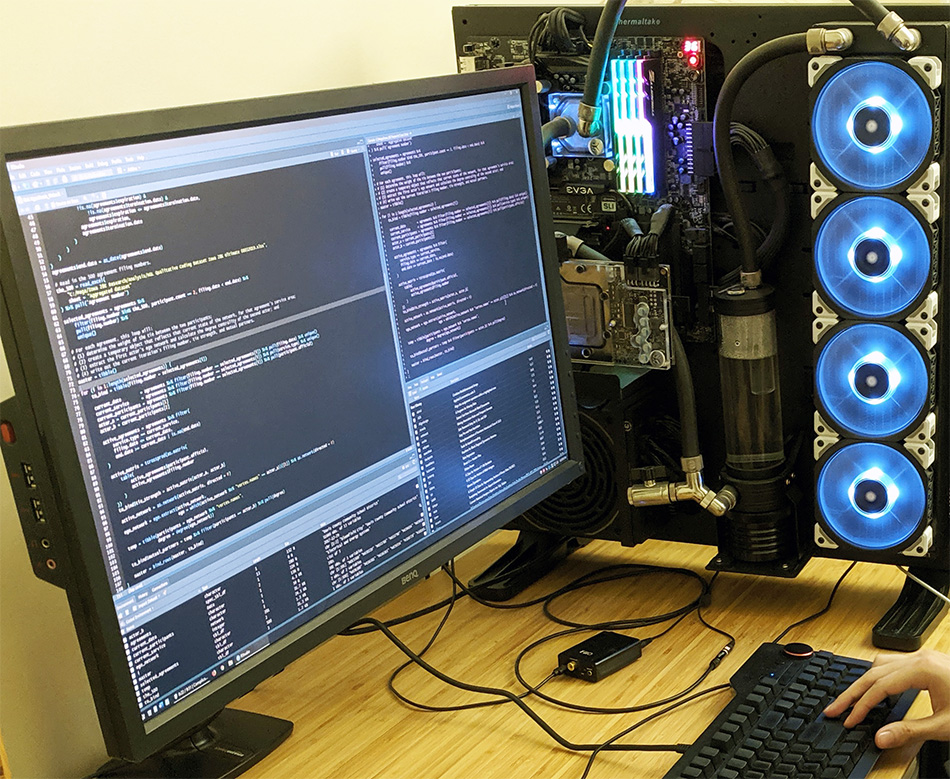

Victor’s Very Professional Website
Site Last Updated: February 12, 2020

Potential employers should look at my CV and Google Scholar profile.
New R users should check out the R basics and visualization pages.
Researchers that use ERGM or RSiena models should be using multiple CPU cores; check out my SNA page for a walkthrough.
Python doesn’t have a monopoly on machine learning; check out my R for machine learning page.
Below you will find a few tips to improve code elegance (i.e., code that is succinct and efficient) and workflow suggestions.
install_favorite_packages.R
I recommend writing and maintaining a script that keeps track of all the packages you regularly use. When re-imaging a workstation, or upgrading to the newest version of R, you can simply run it once (instead of installing packages on an ad-hoc basis). Here is an example:
install_packages = function(pkg) {
new_pkg <- pkg[!(pkg %in% installed.packages()[, "Package"])]
if (length(new_pkg))
install.packages(new_pkg, dependencies = T)
}
packages = c(
"devtools", # R Development Tools
"tidyverse", # dplyr, tidyr, readr, readxl, haven, lubridate, ggplot2, etc.
"janitor", # Clean Dirty Data
"plm", # Panel Linear Models
"statnet", # Network Analysis
"Cairo" # High-Quality R Image Device
)
install_packages(packages)
rm(install_packages, packages)It’s also worth your time to look for useful RStudio add-ins every so often. There are two add-ins in particular that make my life substantially easier:
- “AlignAssign” quickly aligns assignment operators, which when combined with RStudio’s “Reformat Code” function, makes writing pretty R code rather painless.
- “RStudio-Addin-Snippets” enables quick back-to-forward slash conversion (and vice-versa). This comes in handy when you are copying and pasting file paths from Windows (which use backslashes) into an R script (file paths in R must use forward slashes). Though you could escape every backslash in paths, that looks terrible and can make it more difficult to collaborate with colleagues programming on macOS or Linux (which both use forward slashes in paths).
For ease of use, I assign a keyboard shortcut to both of these add-ins in RStudio (Tools > Modify Keyboard Shortcuts).
devtools::install_github("seasmith/AlignAssign") # Align Assignment Operators
devtools::install_github("sfr/RStudio-Addin-Snippets") # Convert SlashesQuietly Load Packages
You can avoid using the library() command with the power of lapply() when more than a handful of packages need to be loaded. Combine suppressMessages() with invisible() to completely suppress output.
packages = c("tidyverse", "lubridate", "readxl", "statnet")
invisible(suppressMessages(lapply(packages, require, character.only = T)))
rm(packages)Wrangling and Modeling ANES Data
Hugg and LeRoux (2019) leveraged personality trait data from the 2012 and 2016 ANES to predict likelihood of engagement with local government.
ANES data can be downloaded in different formats. Here, I import a Stata file.
It’s helpful to copy and paste variables names from the ANES code book into your script, along with a plus or minus sign to indicate directionality (many survey questions are reverse-coded).
# tipi_open Openness +
# tipi_conv Openness -
# tipi_dep Conscientiousness +
# tipi_disorg Conscientiousness -
# tipi_extra Extraversion +
# tipi_resv Extraversion -
# tipi_warm Agreeableness +
# tipi_crit Agreeableness -
# tipi_anx Neuroticism +
# tipi_calm Neuroticism -Next, I create a custom subset of the data; combining mutate()with case_when() allows you to iteratively add re-coded variables.
# Dependent Variable
custom = tibble(
InvolvedLocalMeeting = ANES_2012 %>% mutate(
InvolvedLocalMeeting = case_when(
involv_commmtg == -9 ~ NA_real_,
involv_commmtg == -8 ~ NA_real_,
involv_commmtg == -7 ~ NA_real_,
involv_commmtg == -6 ~ NA_real_,
involv_commmtg == 1 ~ 1,
involv_commmtg == 2 ~ 0
)
) %>% pull(InvolvedLocalMeeting)
)Since political scientists who study voter psychology usually rescale trait values to range from zero and one, I create a function that can be used during the independent variable assembly process.
# Personality Trait Rescale Function
rescale = function(x, ...) {
(x - min(x, ...)) / (max(x, ...) - min(x, ...))
}# Openness
temp = tibble(
first = ANES_2012 %>% mutate(
first = case_when(
tipi_open == -9 ~ NA_real_,
tipi_open == -8 ~ NA_real_,
tipi_open == -7 ~ NA_real_,
tipi_open == -6 ~ NA_real_,
tipi_open == 1 ~ -3,
tipi_open == 2 ~ -2,
tipi_open == 3 ~ -1,
tipi_open == 4 ~ 0,
tipi_open == 5 ~ 1,
tipi_open == 6 ~ 2,
tipi_open == 7 ~ 3
)
) %>% pull(first),
second = ANES_2012 %>% mutate(
second = case_when(
tipi_conv == -9 ~ NA_real_,
tipi_conv == -7 ~ NA_real_,
tipi_conv == -6 ~ NA_real_,
tipi_conv == 1 ~ 3,
tipi_conv == 2 ~ 2,
tipi_conv == 3 ~ 1,
tipi_conv == 4 ~ 0,
tipi_conv == 5 ~ -1,
tipi_conv == 6 ~ -2,
tipi_conv == 7 ~ -3
)
) %>% pull(second)
)
custom = custom %>% mutate(openness = rowMeans(temp),
openness_scaled = rescale(openness, na.rm = T))
rm(temp)I won’t walk through all of the variables, since they each use the same approach: (1) create temporary tibble object; (2) calculate row means; (3) glue resulting column to the custom subset; and (4) create a rescaled version of the new column to add as well.
I finish by adding in the survey weights, strata, and primary sampling unit variables and exporting the finished product to a Stata file.
custom$weights = ANES_2012$weight_full
custom$strata = ANES_2012$strata_full
custom$psu = ANES_2012$psu_full
haven::write_dta(custom, "../Publications/Hugg and LeRoux (JBPA)/ANES_2012.dta")After repeating this process for 2016 and adding a year dummy indicator, the data was merged into a single analysis-ready Stata file.
Since my co-author worked in Stata, modeling were performed via a .do file. Next, I load in the combined 2012 and 2016 ANES data with the use command, declare survey design, and run a model. For the log-likelihood and pseudo-R2, simply remove the “svy:” prefix from the logistic command below.
svyset [pweight = weights], strata(strata) psu(psu) vce(linearized)
svy: logistic ContactedElectedLocal openness_scaled-neuroticism_scaled white female age pweight: weights
VCE: linearized
Single unit: missing
Strata 1: strata
SU 1: psu
FPC 1: <zero>
(running logistic on estimation sample)
Survey: Logistic regression
Number of strata = 132 Number of obs = 4,065
Number of PSUs = 265 Population size = 3,478.6
Design df = 133
F( 8, 126) = 6.08
Prob > F = 0.0000
------------------------------------------------------------------------------
| Linearized
ContactedE~l | Odds Ratio Std. Err. t P>|t| [95% Conf. Interval]
-------------+----------------------------------------------------------------
openness_s~d | 3.282221 1.256061 3.11 0.002 1.539691 6.996841
conscienti~d | .525906 .1801504 -1.88 0.063 .267085 1.035539
extraversi~d | 1.525645 .4253075 1.52 0.132 .8789888 2.648036
agreeablen~d | 1.224736 .5057727 0.49 0.624 .541126 2.771957
neuroticis~d | .3909243 .1149618 -3.19 0.002 .2185121 .6993747
white | 1.492515 .2255505 2.65 0.009 1.106887 2.012493
female | .9148055 .1262171 -0.65 0.520 .6963199 1.201846
age | 1.014194 .0032437 4.41 0.000 1.007799 1.020631
_cons | .0365982 .0185503 -6.53 0.000 .0134294 .0997387
------------------------------------------------------------------------------In the published version of the journal article, this is the first model shown in Table 6:

Estimating Multiple Panel Models
For my dissertation, I needed to be able to make adjustments to dozens of models at once. The code below outlines the approach I developed.
After loading in my data (wrangled and formatted as plm::pdata.frame objects), I create vectors that hold my variables as well as parameters to be used later (when creating tables via the stargazer package):
non_ego_independent_variables = c("active_agreement_count", "degree", "tie_strength", "avg_tie_duration")
ego_independent_variables = c("ego_transitivity")
controls = c(
"enrollment_logged",
"female",
"non_white",
"free_reduced_lunch",
"spending_per_student_logged",
"teachers_ratio",
"teacher_salary_logged",
"teacher_experience",
"teachers_advanced"
)
covariate_labels = c(
"Active Agreement Count",
"Degree Centrality",
"Tie Strength",
"Average Duration of Active Ties",
"Ego Network Transitivity",
"Enrollment (Logged)",
"Female",
"Non-White",
"Free- or Reduced-Price Lunch",
"Spending per Student (Logged)",
"Student-to-Teacher Ratio",
"Teacher Salary (Logged)",
"Teacher Experience",
"Advanced Teachers Ratio"
)
cutoffs = c(0.1, 0.05, 0.01)Adding or removing independent and control variables from my models, their labels for the results table, and statistical significance cut-offs can now all be changed in one place.
Next, I write a function to estimate three models (object names start at Model 3 because the first two specifications were dropped from the final version of my dissertation). Notice how Model 3 only includes the independent variables, Model 4 only includes the controls, and Model 5 includes everything.
create_model_set = function(data_object, dependent_variable, greater_than_year = 1989) {
model_3 <<- plm(
as.formula(paste(
c(dependent_variable,
paste(c(non_ego_independent_variables, ego_independent_variables), collapse = " + ")),
collapse = " ~ "
)),
data = data_object %>% filter(year > greater_than_year), model = "within", effect = "twoways"
)
model_3_adj <<- coeftest(model_3, vcovDC(model_3))
model_4 <<- plm(
as.formula(paste(
c(dependent_variable, paste(c(controls), collapse = " + ")),
collapse = " ~ "
)),
data = data_object %>% filter(year > greater_than_year), model = "within", effect = "twoways"
)
model_4_adj <<- coeftest(model_4, vcovDC(model_4))
model_5 <<- plm(
as.formula(paste(
c(dependent_variable,
paste(c(non_ego_independent_variables, ego_independent_variables, controls), collapse = " + ")),
collapse = " ~ "
)),
data = data_object %>% filter(year > greater_than_year), model = "within", effect = "twoways"
)
model_5_adj <<- coeftest(model_5, vcovDC(model_5))
}I place the resulting models in the global environment so I can run the summary() command on them to obtain certain attributes that cannot be easily extracted.
create_model_set(selected_academic_panel, "lead(ayp_math_highschool)", 2005)
summary(model_3)
summary(model_4)
summary(model_5)Finally, stargazer() allows me to write a heavily-customized LaTeX table to a .tex file that my dissertation can use as an input source. I have to manually add rows that contain the number of observations and the R2 since I am providing stargazer() with models that have had their standard errors adjusted by lmtest::coeftest() and plm::vcovDC() (a wrapper for double-clustering robust covariance matrix estimators).
stargazer::stargazer(
model_3_adj,
model_4_adj,
model_5_adj,
type = "latex",
title = "Panel Models, High School Math Proficiency",
header = F,
out = "3.tex",
covariate.labels = covariate_labels,
font.size = "footnotesize",
model.numbers = F,
add.lines = list(
c(
"District and Year Fixed Effects",
"\\checkmark",
"\\checkmark",
"\\checkmark"
),
c("School Districts", "175", "333", "175"),
c("Years", "12", "12", "12"),
c(
"Observations",
nobs(model_3),
nobs(model_4),
nobs(model_5)
),
c(
"Within-District R\\textsuperscript{2}",
r.squared(model_3) %>% round(3),
r.squared(model_4) %>% round(3),
r.squared(model_5) %>% round(3)
)
),
dep.var.caption = "",
dep.var.labels.include = F,
digits = 3,
align = T,
star.cutoffs = cutoffs,
notes = "Double clustered-robust standard errors in parentheses."
)Finally, when my dissertation is compiled, a fancy results table is produced: